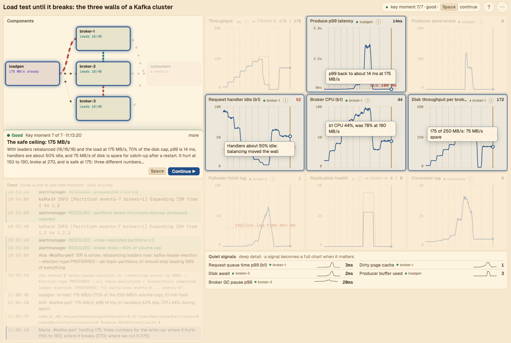

~/smarchone/sim-xp
Simulate
a blog, an incident or a load test.
A new way for engineers to share and build experience. Agents turn any blog, incident or concept into a simulation that brings you closer to reality, and saves you the reading.
experienceencodeplaybook.jsonrunsimulation
Start playing ↗- There's a gap between reading about a system and experiencing it live.
- Simulations close that gap. Not exact, but much closer.
- Agents make it fast: one story in, one simulation out.
An example

How to create playbooks
The story-to-playbook skill turns a blog post, postmortem, concept or short prompt into a validated playbook.json. Install it once:
npx skills add smarchone/sim-xp --skill story-to-playbook -g
Then give it a story in Claude Code:
/story-to-playbook https://github.blog/news-insights/company-news/oct21-post-incident-analysis/ /story-to-playbook "Postgres as a job queue, load tested until it breaks" /story-to-playbook "How a Kafka consumer rebalance storm starts and ends"
Open the file in the player (drop it on the page, or Open file… in the side panel) and press Space.
Part of agentic experiences: accelerate learning with agents ↗